Cascading Style Sheets (CSS) is a style sheet language used for describing the presentation of a document written in a markup language like HTML. CSS is a cornerstone technology of the World Wide Web, alongside HTML and JavaScript. Just to be clear, CSS is its own separate language, with its own unique syntax.
Reference: MDN CSS Site
The Web browser turns the HTML text into the tree structure of the DOM.
CSS is used to control how the tree structure is displayed using boxes.
A CSS Ruleset is composed of two parts: Selector & Declaration Block.
The Selector indicates which elements (type) will the ruleset will be applied.
You can also use a selector class (.) attribute, or Id (#) attribute.
A class represents a group with the same characteristics. So, use a class attribute when there could be several elements that need the same style.
Use an id attribute when there's only one element (something unique) to apply it to.
Combining selectors - called the descendant selector is only one of many ways to combine selectors.
CSS Selector Documentation: MDN Web Docs
The Declaration Block determines how the "ruleset" will modify those elements.
The term "cascading" in Cascading Style Sheets refers to the way that style properties "cascade" down the DOM tree,
starting at the top.
A style applied to the body element will affect the entire document.
A style applied to a lower-level element will affect that element and all its descendants.
When the browswer renders HTML every element has an "invisible box" around it.
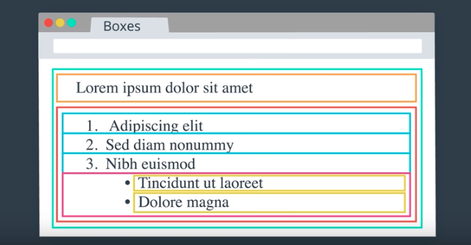A developer can control the box width, height, padding, border, and margin.
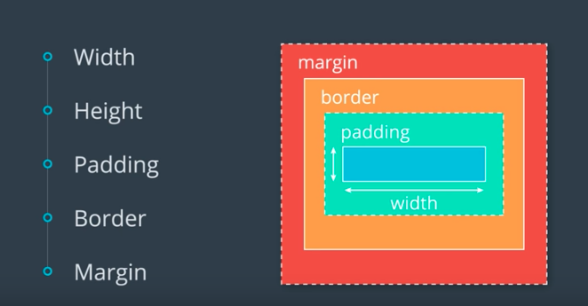Note: A developer can also nest div elements to put one box inside another..
Use a percentage to scale a boxes content to adjust for size. Just note this does not include the border.
The most common way is to link your HTML file to another file containing CSS instructions.
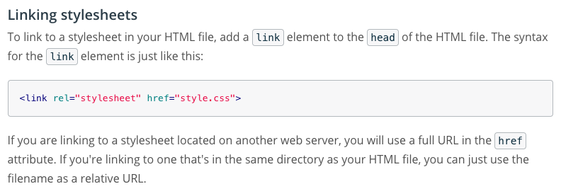There are three different ways to represent color values in the code.
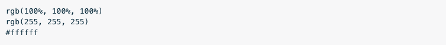You can add font-family rules to both of these and then experiment with different fonts.
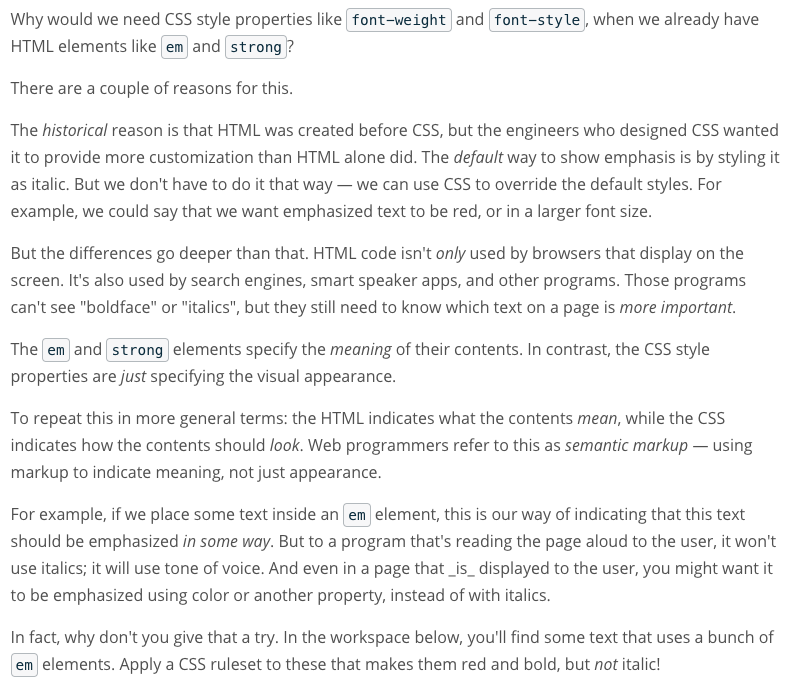
Div's don't do anything without any content. It's meant to structure and divide content.
A div stands for a content division element.
Sample container (DIV) code:
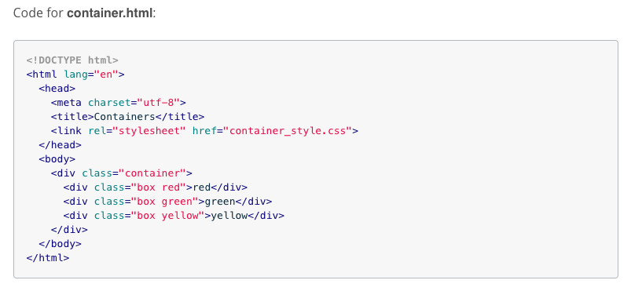Sample container (Flexbox) code:
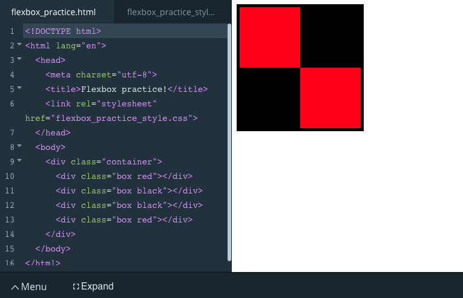Design:
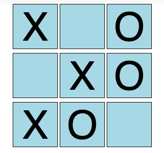HTML:
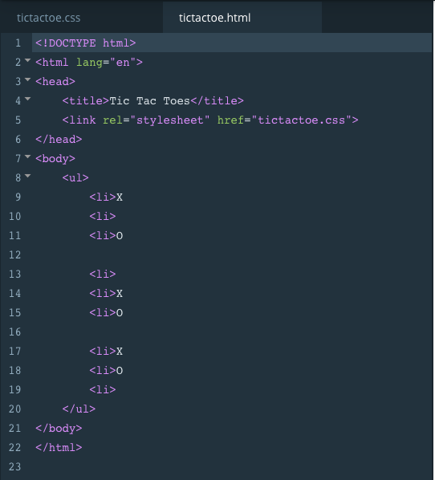CSS:
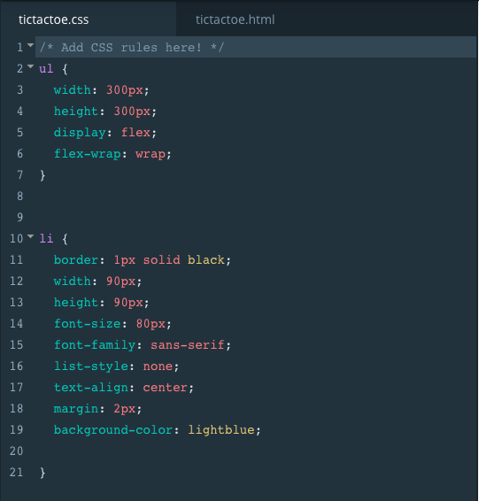You need to override those default browser styles using css.
Design "with" Default Browser Styles:
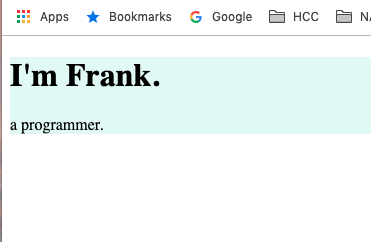Design "without" Default Browser Styles (fixed):
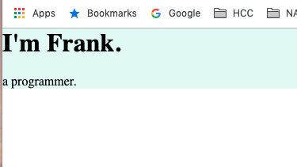Modify CSS Margin for both the "body and heading (I'm Frank)" to eleminate extra space:
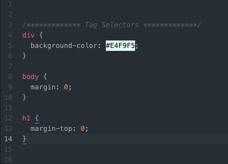